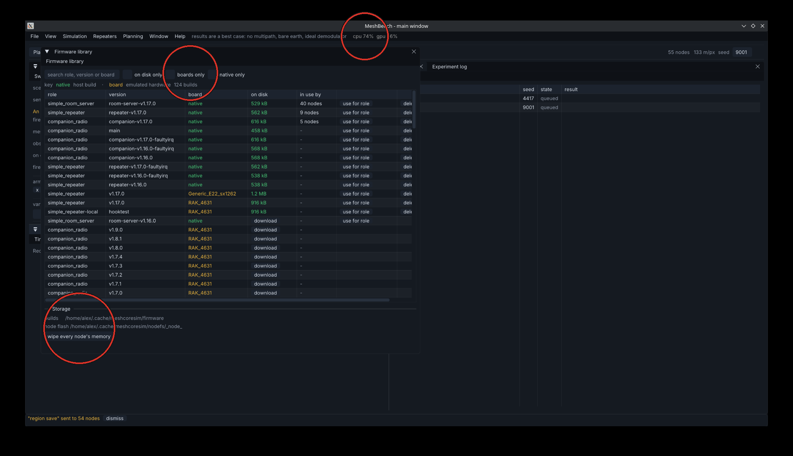

The firmware library
Every build MeshBench knows about, whether it is on this machine or merely published, and what each node is running.

The three marks, in order.
1. Filters and search. on disk only hides everything that would need a download, boards only hides the host builds, native only does the reverse. The search box matches role, version or board, because those are the three things people actually look for: they type 1.17, or companion, or the board on the desk.
2. The key. native in green is a build compiled for this machine. board in orange is emulated hardware: the image people flash, run unmodified inside an emulator. The count beside it is how many builds the catalogue knows.
3. Storage, and the button that saves an afternoon. wipe every node's memory deletes the persisted per-node state. Nodes keep their identity and preferences between runs, as hardware does, and that is a trap when comparing two firmware builds: saved preferences beat a compiled default, so a node that has run before loads its old value and never reaches the changed one. Both arms of a comparison then return identical numbers and the change looks inert. Identities regenerate from the run seed, so a wipe costs nothing but the next boot.
Columns
| column | meaning |
|---|---|
| role | the MeshCore application: simple_repeater, companion_radio, simple_room_server |
| version | a per-role release tag, repeater-v1.17.0, not a bare v1.17.0 |
| board | native for a host build, or the board an emulated image is for |
| on disk | size if it is here, or a download button if it is not |
| in use by | how many nodes in the current scenario run it |
Versions are per role. Upstream tags one role at a time and so do our native builds, so companion-v1.17.0 and repeater-v1.17.0 are different releases. Asking for a bare v1.17.0 resolves nothing and reports "no native builds published", which points at the release rather than at the string that caused it.
Assigning firmware
use for role sets every node of that role to that build. It never changes what a node *is*: a companion asked to run a repeater build would be a different node type, so the button is scoped to the role and says so.
For an emulated board image the same button applies, with one thing worth knowing before pressing it: every node it lands on becomes its own emulator, running in real time and costing about a core. The tooltip says how many nodes that would be. Eight saturate a twelve-core machine, and past that nothing reports an error - boots stretch and simulated time falls behind the wall clock, which reads as a mesh that has gone quiet.
Getting a build in from outside
A branch build, a patched image or somebody else's binary can be imported directly. From a MeshCore checkout that uses PlatformIO, tools/platformio/ carries a post-build hook that hands the image over automatically, so building and testing is one keypress:
extra_scripts = post:meshbench.py
It reads the board and role out of the environment name and names the build after the branch it came from, so two local builds appear separately rather than overwriting each other.